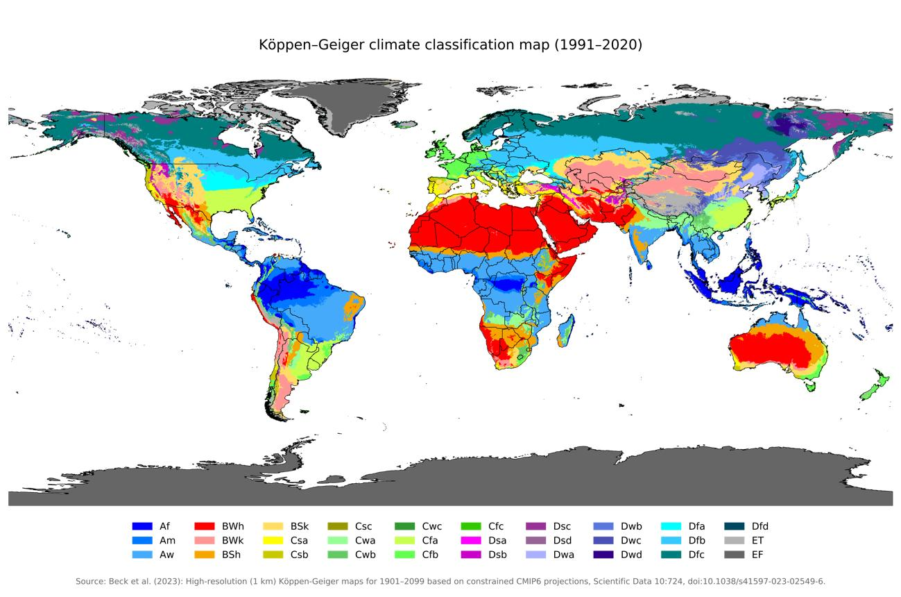
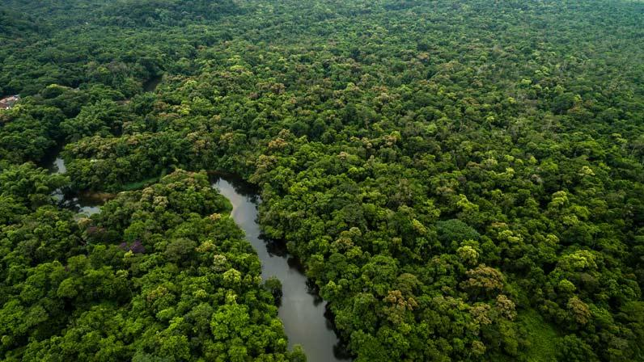
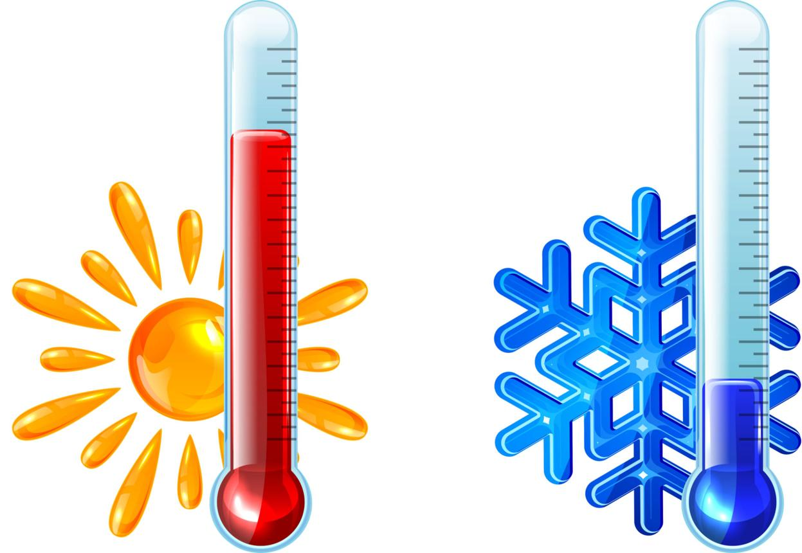
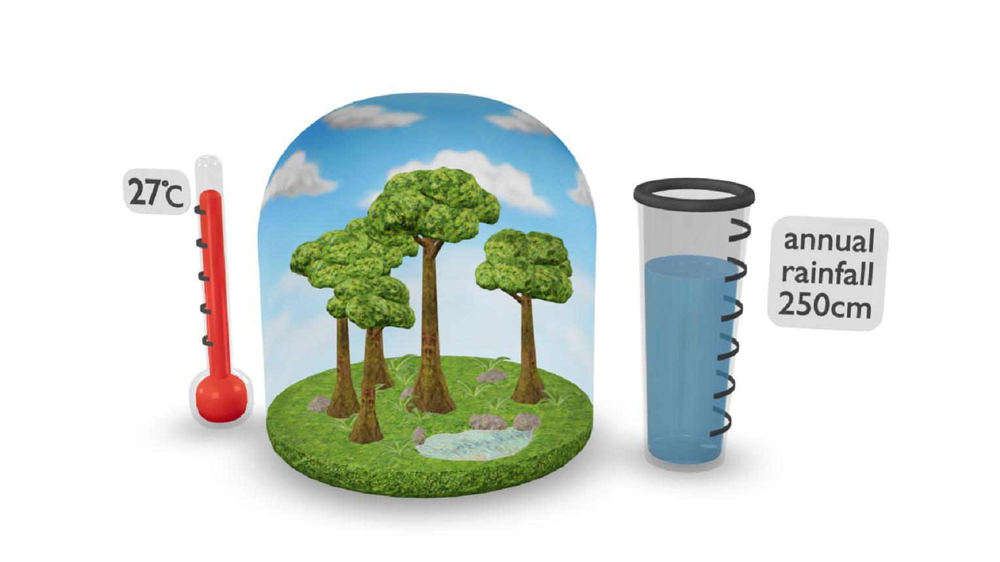
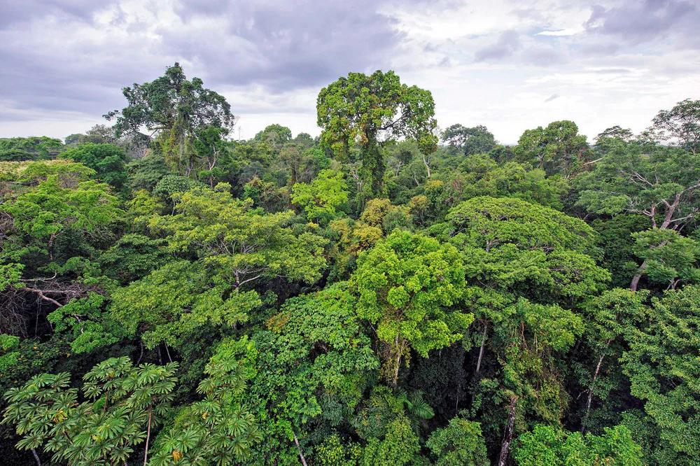
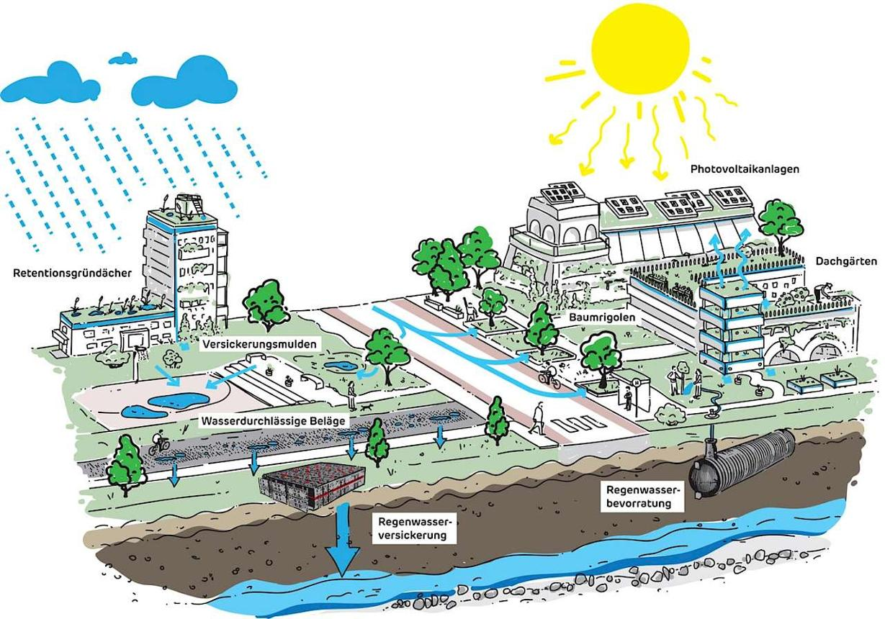

Pengertian Klasifikasi Iklim Köppen dan kegunaannya dalam memahami kondisi wilayah.

Pernahkah kalian bertanya mengapa Indonesia memiliki hutan hujan tropis, wilayah Gurun Sahara sangat kering, dan Antarktika tertutup es? Salah satu cara untuk memahami perbedaan karakteristik wilayah tersebut adalah dengan mempelajari klasifikasi iklim Köppen–Geiger.
Klasifikasi iklim Köppen–Geiger adalah sistem pengelompokan iklim di berbagai wilayah Bumi berdasarkan pola suhu udara dan curah hujan dalam jangka panjang, dengan mempertimbangkan hubungan iklim dengan persebaran vegetasi alami. Sistem ini dikembangkan oleh ahli klimatologi dan dan botani asal Jerman kelahiran Saint Petersburg, Wladimir Köppen (1846–1940). Sistem ini pertama kali diperkenalkan sekitar tahun 1884, kemudian disempurnakan pada 1918 dan 1936. Belakangan, sistem ini juga dikembangkan lebih lanjut oleh Rudolph Geiger, sehingga sering disebut juga klasifikasi iklim Köppen-Geiger.
Secara sederhana, klasifikasi ini membantu kita menjawab tiga pertanyaan:
Seberapa panas atau dingin suatu wilayah?
Seberapa banyak dan kapan hujan turun di wilayah tersebut?
Jenis vegetasi apa yang umumnya sesuai dengan kondisi iklimnya?
Köppen pertama kali menerbitkan sistem klasifikasinya pada 1884. Sistem tersebut masih digunakan secara luas dalam pembelajaran geografi dan penelitian iklim, termasuk untuk memetakan persebaran wilayah iklim di seluruh dunia.
Sebelum mempelajari lebih lanjut apa perbedaan cuaca dan iklim?
Cuaca
Kondisi atmosfer pada waktu dan tempat tertentu, misalnya Surabaya mengalami hujan deras pada sore hari.
Contoh: suhu, awan, angin, dan hujan hari ini.
Iklim
Pola rata-rata dan variasi kondisi atmosfer dalam jangka panjang, umumnya menggunakan periode 30 tahun untuk normal iklim.
Contoh: suatu wilayah memiliki suhu tinggi dan curah hujan yang melimpah sepanjang tahun.
Artinya, satu hari yang dingin tidak otomatis membuat suatu wilayah beriklim dingin. Penentuan iklim memerlukan data pengamatan dalam jangka panjang, bukan hanya kondisi pada satu hari.

2. Dasar penentuan klasifikasi iklim Köppen
Köppen mengelompokkan iklim dengan memperhatikan dua unsur utama berikut.
A. Suhu udara
Menunjukkan tingkat panas atau dinginnya udara, baik berdasarkan suhu rata-rata bulanan maupun pola suhu sepanjang tahun.

B. Curah hujan

Menunjukkan jumlah hujan yang turun, termasuk pembagian musim hujan dan musim kering serta pola sebarannya dalam setahun.Selain kedua unsur tersebut, vegetasi alami menjadi petunjuk penting karena tumbuhan menanggapi kondisi suhu dan ketersediaan air di lingkungannya. Misalnya, hutan hujan umumnya berkembang di daerah lembap, sedangkan vegetasi gurun mampu bertahan dalam kondisi kekurangan air.
Perlu diingat: klasifikasi Köppen bukan hanya didasarkan pada letak lintang. Ketinggian tempat, jarak dari laut, sirkulasi atmosfer, dan faktor geografis lain memengaruhi suhu dan curah hujan suatu wilayah, sehingga wilayah yang berada pada lintang serupa belum tentu memiliki iklim yang sama.
3. Lima kelompok utama iklim Köppen
Dalam sistem Köppen–Geiger, iklim dunia dibagi menjadi lima kelompok utama yang diberi kode huruf kapital A sampai E. Setiap kelompok memiliki karakteristik suhu, curah hujan, dan vegetasi yang berbeda.
A — Iklim tropis
Panas dan lembap
Suhu rata-rata setiap bulan umumnya minimal 18°C.
Curah hujan relatif tinggi pada tipe-tipe tropis basah, tetapi distribusinya berbeda antarsubtipe.
Vegetasi dapat berupa hutan hujan tropis atau sabana.
Contoh: kawasan Amazon, Cekungan Kongo, dan berbagai wilayah Indonesia.
Subtipe: Af (hutan hujan), Am (monsun), Aw (sabana dengan musim kering pada musim dingin dalam istilah meteorologi).
B — Iklim kering
Kekurangan air
Curah hujan tidak mencukupi dibandingkan kebutuhan penguapan potensial.
Ketersediaan air menjadi faktor pembatas utama kehidupan tumbuhan.
Vegetasi umumnya jarang, seperti tumbuhan gurun dan semak padang rumput kering.
Contoh: Gurun Sahara dan wilayah gurun di Jazirah Arab.
Subtipe: BW (gurun) dan BS (stepa atau semi-kering).
C — Iklim sedang
Musim dingin relatif ringan
Memiliki perbedaan suhu antarmusim yang cukup jelas.
Suhu musim dinginnya relatif lebih ringan dibandingkan kelompok D.
Vegetasinya dapat berupa hutan gugur, hutan campuran, dan padang rumput.
Contoh: sebagian wilayah Eropa Barat dan wilayah subtropis lembap tertentu.
Subtipe antara lain Cfa (lembap dengan musim panas panas), Cfb (musim panas relatif sejuk), dan Cs (musim panas kering).
D — Iklim kontinental
Musim dingin sangat dingin
Memiliki musim dingin yang dingin dan musim panas yang bervariasi dari hangat hingga panas.
Perbedaan suhu antarmusim dapat besar.
Vegetasinya antara lain hutan konifer atau taiga di wilayah tertentu.
Contoh: sebagian wilayah Kanada, Rusia, dan Siberia.
Subtipe antara lain Dfa, Dfb, dan Dfc, yang menunjukkan perbedaan pola suhu dan musim.
E — Iklim kutub
Ekstrem dingin
Suhu sangat rendah sepanjang tahun.
Dalam kelompok E, suhu rata-rata bulan terhangat kurang dari 10°C.
Vegetasi sangat terbatas; wilayah tertentu didominasi tundra, sedangkan wilayah lainnya tertutup es permanen.
Contoh: Antarktika, Greenland, dan sebagian wilayah Arktik.
Subtipe: ET (tundra) dan EF (tutupan es permanen).
Sumber: NOAA, JetStream—Climate Zones; NOAA Science On a Sphere—Köppen–Geiger Climate Classification (2007).
Catatan untuk guru: kelompok H (iklim dataran tinggi) kadang ditampilkan pada peta atau versi modifikasi Köppen–Geiger. H bukan salah satu dari lima kelompok utama dalam sistem aslinya. Kondisi iklim pegunungan dapat sangat beragam sesuai ketinggian, lereng, dan letak geografis.
4. Cara membaca kode iklim Köppen–Geiger
Salah satu keunikan sistem Köppen–Geiger adalah penggunaan kode huruf. Kode ini membantu kita memahami karakteristik suatu iklim secara ringkas.
Contohnya adalah kode Af, Am, Aw, BWh, Cfa, dan Cfb.
Arti huruf pada kode iklim
| Kode | Arti sederhana | Contoh penggunaan |
|---|---|---|
| A | Iklim tropis | Af, Am, Aw |
| B | Iklim kering | BWh, BSh, BWk |
| C | Iklim sedang | Cfa, Cfb, Csa |
| D | Iklim kontinental | Dfa, Dfb, Dfc |
| E | Iklim kutub | ET, EF |
| f | Tidak ada musim kering yang berarti menurut kriteria subtipe | Af atau Cfb |
| m | Pola hujan monsun | Am |
| w | Musim dingin kering | Aw atau Cwa |
| s | Musim panas kering | Csa atau Csb |
| h | Pada kelompok B, menunjukkan karakteristik panas | BWh |
| k | Pada kelompok B, menunjukkan karakteristik lebih dingin | BWk |
Huruf kecil tidak memiliki arti yang sama untuk semua kelompok. Maknanya bergantung pada posisi huruf dan kelompok iklimnya.
Contoh interpretasi kode
Af
Iklim hutan hujan tropis
A menunjukkan iklim tropis, sedangkan f menunjukkan tidak adanya musim kering menurut kriteria Köppen. Bulan terkering memiliki curah hujan sekurang-kurangnya 60 mm.
Am
Iklim monsun tropis
Wilayah tetap panas sepanjang tahun, tetapi memiliki perbedaan curah hujan yang jelas antara musim hujan dan periode yang lebih kering.
Aw
Iklim sabana tropis
Wilayah memiliki suhu tinggi sepanjang tahun, dengan musim kering yang nyata. Vegetasi sabana dapat berkembang di daerah yang sesuai.
BWh
Iklim gurun panas
B menunjukkan iklim kering, W menunjukkan gurun, dan h menandakan karakteristik suhu panas pada kelompok B.
Sumber interpretasi kode: NOAA, JetStream Max: Köppen–Geiger Climate Subdivisions.
5. Kegunaan klasifikasi iklim Köppen dalam memahami kondisi wilayah
Klasifikasi iklim tidak hanya digunakan untuk menghafal nama iklim. Sistem ini membantu siswa dan peneliti menjelaskan hubungan antara kondisi atmosfer dengan lingkungan dan aktivitas manusia.
1. Memahami potensi pertanian
Informasi tentang suhu dan curah hujan membantu menjelaskan kesesuaian suatu wilayah untuk tanaman tertentu. Wilayah yang lembap dapat mendukung budidaya padi, sedangkan tanaman tahan kering lebih sesuai untuk kondisi dengan keterbatasan air.
Contoh analisis: bagaimana pola hujan memengaruhi waktu tanam dan kebutuhan irigasi?
2. Menjelaskan persebaran vegetasi dan ekosistem

Suhu dan ketersediaan air memengaruhi jenis tumbuhan yang mampu hidup di suatu wilayah. Hal ini membantu menjelaskan mengapa hutan hujan, sabana, stepa, dan tundra memiliki persebaran berbeda.
Contoh analisis: mengapa vegetasi gurun berbeda dari vegetasi hutan hujan tropis?
3. Mendukung perencanaan wilayah dan permukiman

Karakteristik iklim dapat menjadi salah satu pertimbangan dalam merancang bangunan, sistem drainase, pengelolaan air, serta pemilihan bahan bangunan yang sesuai dengan kondisi setempat.
Contoh analisis: mengapa bangunan di daerah panas dan lembap memerlukan perhatian terhadap ventilasi?
4. Membandingkan karakteristik antarwilayah
Kode iklim memudahkan kita membandingkan wilayah tanpa harus menguraikan seluruh data suhu dan curah hujannya dari awal.
Contoh analisis: apa perbedaan lingkungan yang umum dijumpai di wilayah Af dan BWh?
5. Mendukung penelitian lingkungan dan perubahan iklim
Peta Köppen–Geiger dapat digunakan untuk membandingkan pola iklim antarperiode dan mengkaji kemungkinan pergeseran zona iklim. Namun, penilaian dampak perubahan iklim tetap memerlukan data dan analisis tambahan.
Contoh analisis: apakah perubahan suhu dan curah hujan jangka panjang dapat mengubah klasifikasi iklim suatu wilayah?
Kegunaan klasifikasi iklim dalam memahami kondisi wilayah didukung oleh NOAA Climate.gov, yang menjelaskan bahwa klasifikasi iklim membantu identifikasi karakteristik wilayah, kesesuaian tanaman, ekologi, serta berbagai kebutuhan perencanaan. Penelitian ilmiah juga menggunakan klasifikasi Köppen–Geiger untuk regionalisasi iklim dan kajian perubahan iklim.
6. Contoh penerapan dalam konteks Indonesia
Indonesia memiliki keragaman pola curah hujan, dari wilayah yang relatif basah sepanjang tahun hingga wilayah yang mengalami musim kering lebih nyata. Oleh karena itu, tidak tepat jika seluruh Indonesia dianggap mempunyai satu kode Köppen yang sama.
Wilayah hutan hujan yang lembap
Sebagian wilayah Indonesia memiliki kondisi yang sesuai dengan karakteristik Af: panas sepanjang tahun dan curah hujan tetap tinggi, termasuk pada bulan terkering.
Wilayah dengan pola monsun
Beberapa wilayah memiliki perbedaan musim hujan dan kemarau yang nyata. Bergantung pada data suhu dan curah hujan, kondisi tertentu dapat sesuai dengan tipe Am.
Wilayah dengan musim kering nyata
Sebagian wilayah Nusa Tenggara memiliki periode kering yang lebih panjang. Dalam klasifikasi tertentu, lokasi yang memenuhi seluruh kriteria dapat termasuk tipe Aw.
Penting untuk pembelajaran: contoh tersebut menunjukkan karakteristik yang mungkin dijumpai, bukan penetapan kode resmi untuk seluruh pulau atau provinsi. Kode iklim pada lokasi tertentu harus ditentukan berdasarkan data suhu dan curah hujan jangka panjang serta kriteria klasifikasi yang digunakan.
Untuk menghasilkan klasifikasi yang dapat dipertanggungjawabkan, data perlu mencakup periode yang memadai. Normal iklim sering menggunakan periode 30 tahun, sementara penelitian peta Köppen–Geiger dapat memakai periode dan sumber data tertentu yang dijelaskan secara eksplisit dalam metodologinya.
Pertanyaan diskusi tingkat analisis
Mengapa dua wilayah yang berada di lintang hampir sama dapat memiliki kode iklim berbeda?
Bagaimana klasifikasi iklim membantu petani merencanakan waktu tanam?
Mengapa klasifikasi iklim tidak cukup untuk menentukan jenis tanaman yang pasti berhasil tumbuh di suatu wilayah?
Jika suatu wilayah mengalami perubahan pola suhu dan curah hujan selama puluhan tahun, bagaimana hal itu dapat memengaruhi klasifikasi iklimnya?
Pertanyaan tersebut melatih siswa tidak hanya mengingat kode, tetapi juga menganalisis hubungan antara iklim, lingkungan, dan aktivitas manusia.
9. Kesimpulan materi
Klasifikasi iklim Köppen–Geiger merupakan sistem pengelompokan iklim berdasarkan pola suhu dan curah hujan jangka panjang serta kaitannya dengan vegetasi alami. Sistem ini membagi iklim menjadi lima kelompok utama, yaitu A (tropis), B (kering), C (sedang), D (kontinental), dan E (kutub).
Kegunaan utamanya adalah membantu kita memahami karakteristik suatu wilayah, menjelaskan persebaran vegetasi, membandingkan kondisi antarwilayah, mendukung pertimbangan pertanian dan perencanaan wilayah, serta menjadi salah satu alat dalam penelitian lingkungan dan perubahan iklim.
Inti yang perlu diingat siswa: kode iklim bukan sekadar huruf untuk dihafalkan. Kode tersebut merangkum pola suhu dan hujan yang membantu menjelaskan mengapa kondisi lingkungan berbeda antara satu wilayah dan wilayah lainnya.
Daftar pustaka
Referensi berikut dapat ditelusuri dan digunakan untuk memperkuat materi ajar.
1. National Oceanic and Atmospheric Administration (NOAA). (n.d.). Climate Zones. NOAA JetStream. https://www.noaa.gov/jetstream/global/climate-zones
2. National Oceanic and Atmospheric Administration (NOAA). (n.d.). JetStream Max: Addition Köppen-Geiger Climate Subdivisions. https://www.noaa.gov/jetstream/global/climate-zones/jetstream-max-addition-k-ppen-geiger-climate-subdivisions
3. NOAA Climate.gov. (2011). How do scientists classify different types of climate? https://www.climate.gov/maps-data/climate-data-primer/how-do-scientists-classify-different-types-climate
4. NOAA Science On a Sphere. (2007). Köppen-Geiger Climate Classification. Data source: Peel, M. C., Finlayson, B. L., & McMahon, T. A. (2007). https://sos.noaa.gov/catalog/datasets/koppen-geiger-climate-classification-2007/
5. Peel, M. C., Finlayson, B. L., & McMahon, T. A. (2007). Updated world map of the Köppen–Geiger climate classification. Hydrology and Earth System Sciences, 11, 1633–1644. https://doi.org/10.5194/hess-11-1633-2007
6. Kottek, M., Grieser, J., Beck, C., Rudolf, B., & Rubel, F. (2006). World map of the Köppen–Geiger climate classification updated. Meteorologische Zeitschrift, 15(3), 259–263. https://doi.org/10.1127/0941-2948/2006/0130